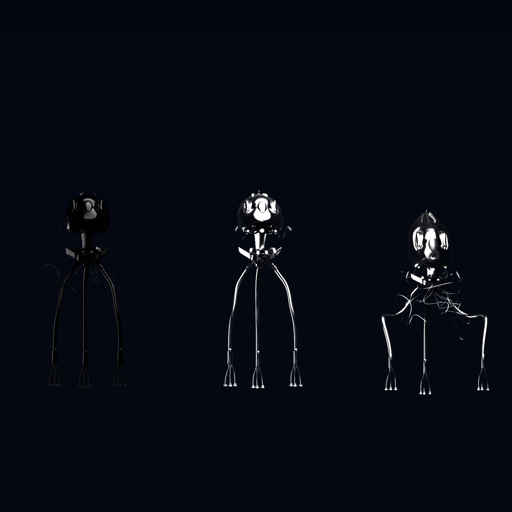
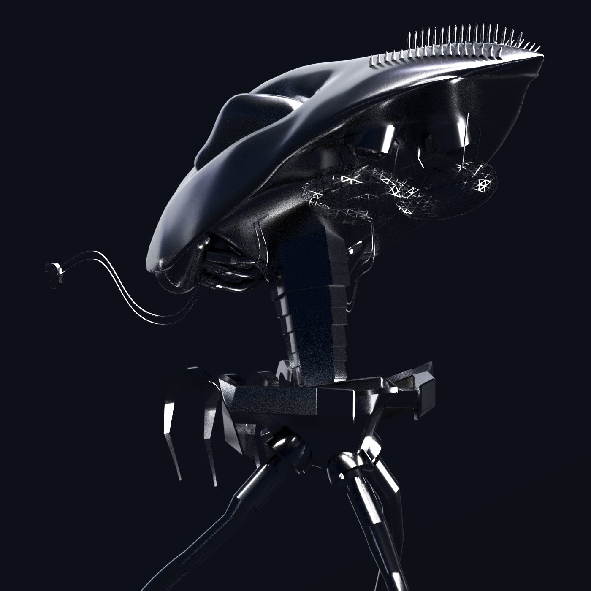
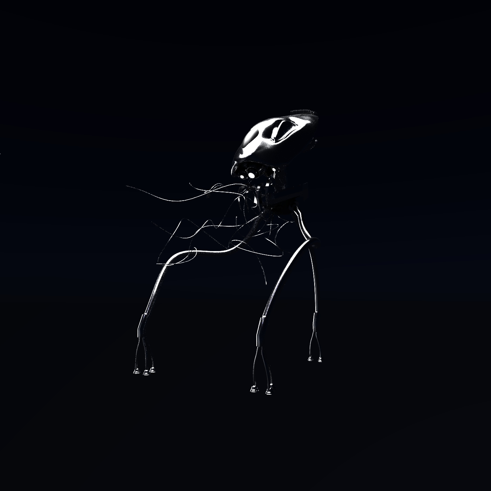

"Tripods"
8.1.20
War Of The Worlds was one of my favorite films growing up, mostly because it should how creative people were while designing the alien walkers. During this project I spent 5 days working on it, this was because my file had deleted making me lose two days of work. For an entire day I contemplated on stopping and trying another project because of the time, but the next day I'd spent the entire day and night redoing the whole project. I felt like a zombie after the project was done but this is why I enjoyed making it I was able to push myself harder to see the outcome I wanted.